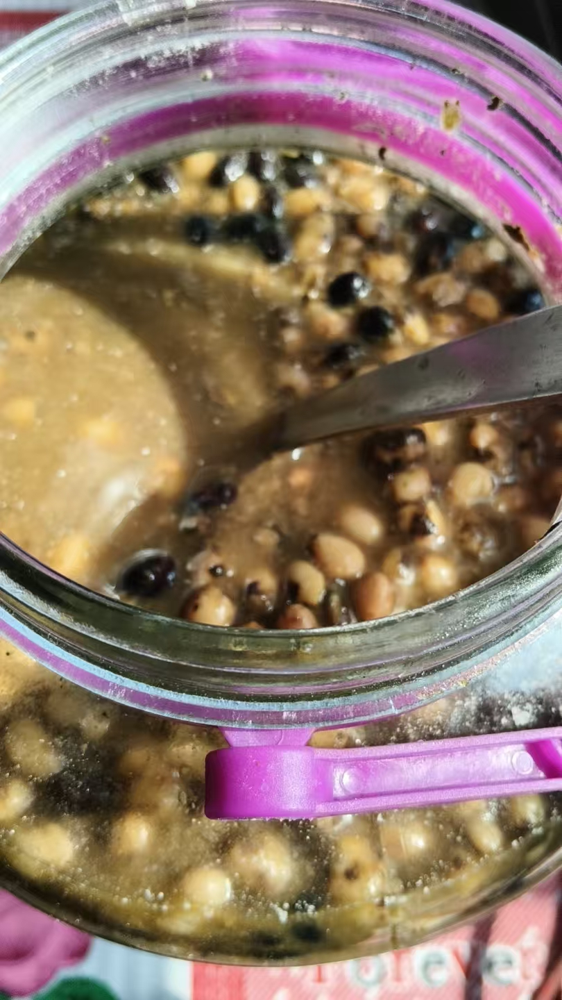
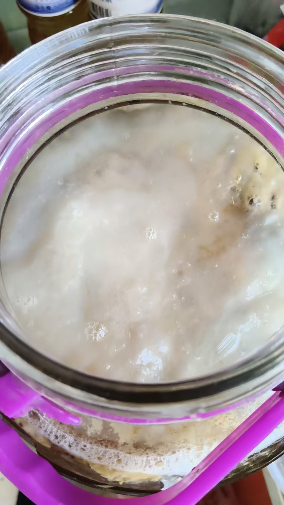

20261016修三个丹田 多个果位
修炼修行奇门遁甲占卜预测 原始对话记录又是奇怪
我说夜里两点截屏了铁布衫，大力金刚掌
只是图片
一二节记住了，没截屏
昨晚又看到直播，把一二节又截屏了
回来看手机，想打印出来
结果，其他图片又全部消失
不知道什么意思
是没必要练吗
不过每晚直播，我还可以重新截屏
问脑屏，可以练吗，练可以
那就今晚上再截屏
不过脑屏说，
只能循序渐进
练武功，容易出各种问题，走偏
并且武功使用，耗费更大，容易折寿
可以练，增强硬功能量，但绝对不能展示，表演
一旦表演就停不下来了，耗费，短寿
我已经做到了，脑屏指导人生
细节修持
这个最最重要
比如修三个丹田
古人或者说一般人，修元婴，只修一个
这样，历劫的时候，很容易被业障魔头，所伤
就修不成了
修三个，
隐藏两个
这样，伤一个，还有两个起作用
修复也快
这是修炼细节
不传之秘
另外，果位要多修几个
过去，我是道果，教神仙的神仙
未来，佛果，有佛国
刚才突然闪了一个念头，我去问观世音菩萨，我若犯戒，当会如何
于是，出了一相
老猴子变成了小猴子
也就是说，法力尽失，打回原形
这意思
不犯戒，但动了犯的念头，不能恢复
也不是，过去道身，未来佛身，一块加持，修复了现在的果位，
如果只修现在一个果位身，
恢复不了的话 又是常人一个
这都是修炼中的细节心法修炼
宝之秘之
奇门遁甲预测
方位很重要
一男子感冒发烧，一月多没好
药店门诊四边都是
最终看到是东北方，潍坊市人民医院
结果去开了两瓶药，吃了一周，好好的了
开始在东南望留卫生院打了两次针，一次一周，没效果
东西南北药店，各种药，没用
还在门诊打小针
还是这道理，白亮的方位，花钱最少，效果最好

这次大酱做的也很好
还要继续发酵
三个月以上，六个月，十二个月最好
这瓶子做差不多，就在老家里闲院里，用大缸做

红茶菌也很成功

上面又长了一个
[呲牙][呲牙]
两个研究生男孩得了两万，女孩得了一万
今晚女孩过来请吃饭
那晚男孩过来，一高兴喝了一斤樱桃酒
樱桃酒还没转化好，太烈
喝蒙了，差点没跟人打起来
[憨笑][憨笑][憨笑]
女孩的导师是正院长，隔三差五带着门下喝酒
这女孩练的半斤白酒没事，还要喝啤酒
我还喝不了啤酒，只能硬抗白酒
女孩导师是女的
很能喝
孩子们的学校，导师的选择，都是我操作的
不能随便改变他人的人生
但现在这些学生，已经入了修行们
我可以改变
改变只是显法证道
所以，不管给谁治疗疾病，我都让他们先进入修行圈子，改变心性
然后收费买福
学生问，考公考博
我说命中考博
山一大
男老师
问研究哪个课题
我看到养细菌
微生物
结果搜山医大导师，
找到一个唐兵，五十多岁，
就是研究微生物
截屏消失了
又是奇怪。
我说夜里两点截屏了铁布衫、大力金刚掌，只是图片。一二节记住了，没截屏。昨晚又看到直播，把一二节又截屏了。回来看手机，想打印出来——结果，其他图片又全部消失。
"不知道什么意思。是没必要练吗。"
不过每晚直播，还可以重新截屏。他问脑屏：可以练吗。答，练可以。那就今晚上再截屏。
再问下去，话就不一样了。"只能循序渐进。练武功，容易出各种问题，走偏。并且武功使用，耗费更大，容易折寿。" 可以练，增强硬功能量，但绝对不能展示、表演。一旦表演，就停不下来了，耗费，短寿。
到这儿他说了一句总结："我已经做到了，脑屏指导人生。"
接下来的话，是讲细节的。细节修持，这个最最重要。比如修三个丹田。
古人，或者一般人，修元婴只修一个。这样历劫的时候，很容易被业障魔头所伤，就修不成了。修三个，隐藏两个。伤一个，还有两个起作用，修复也快。"这是修炼细节，不传之秘。"
另外，果位要多修几个。过去，我是道果，教神仙的神仙；未来，佛果，有佛国。刚才突然闪了一个念头，我去问观世音菩萨，我若犯戒，当会如何。于是出了一相：老猴子变成了小猴子。也就是说，法力尽失，打回原形。
不犯戒，但动了犯的念头，不能恢复？也不是。"过去道身，未来佛身，一块加持，修复了现在的果位。如果只修现在一个果位身，恢复不了的话，又是常人一个。" 这都是修炼中的细节心法修炼。宝之秘之。
后半页转到方位。
奇门遁甲预测，方位很重要。一男子感冒发烧，一月多没好，药店门诊四边都是。最终看到是东北方，潍坊市人民医院。结果去开了两瓶药，吃了一周，好好的了。开始在东南望留卫生院打了两次针，一次一周，没效果。东西南北的药店，各种药，没用。还在门诊打小针。
"还是这道理，白亮的方位，花钱最少，效果最好。"
生活那头照旧。大酱做得也很好，还要继续发酵，三个月以上，六个月、十二个月最好。红茶菌也很成功，上面又长了一个。